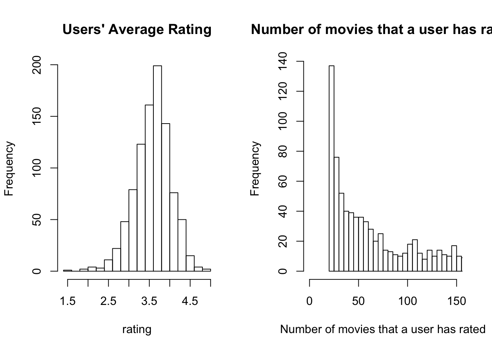
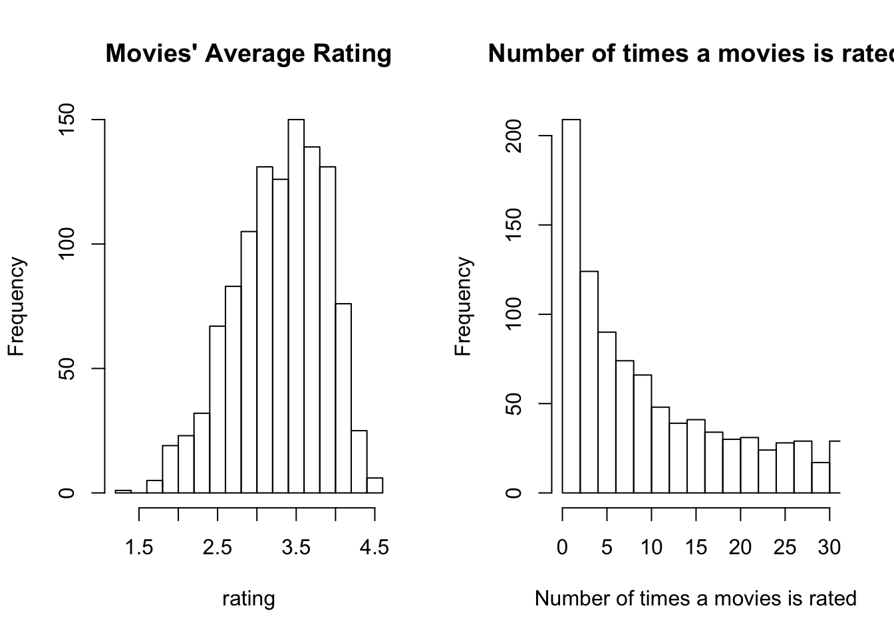

For 2 vectors \(q\) and \(x\)
The similarity measures can be use for content based filtering. When recommending a movie to a user, the similarity score is compared between the user and the movie. It is surprising to treat movie and user with the same feature space since they are 2 different kind of entities. This is just a way to measure relevance.
We can treat each user as a separate linear regression problems by following the below steps:
This means that each user has their own method (represented by different linear function) of rating the movies by taking the variables \(X\) as inputs.
To learn \(\theta^{(j)}\), the parameter for single user \(j\):
\(\underset{\theta^{(j)}}{\operatorname{min}} \frac{1}{2m^{(j)}} \sum\limits_{i:r(i,j)=1} \left( (\theta^{(j)})^Tx^{(i)}-y^{(i,j)} \right)^2 + \frac{\lambda}{2m^{(j)}} \sum\limits_{k=1}^n (\theta^{(j)}_k)^2\)
Gradient descent update:
for \(k=0\), \(\theta_k^{(j)}:=\theta_k^{(j)} - \alpha \frac{1}{m} \sum\limits_{i:r(i,j)=1} \left( (\theta^{(j)})^T x^{(i)} - y^{(i,j)} \right) x_k^{(i)}\)
for \(k \neq 0\), \(\theta_k^{(j)}:=\theta_k^{(j)}-\alpha \frac{1}{m} \left( \sum\limits_{i:r(i,j)=1} \left( (\theta^{(j)})^T x^{(i)} - y^{(i,j)} \right) x_k^{(i)} + \lambda \theta_k^{(j)} \right)\)
Assuming that users have given their preferences, then the problem becomes as follows.
Given \(\theta^{(1)},...,\theta^{(n_u)}\) to learn \(x^{(i)}\):
\(\underset{x^{(i)}}{\operatorname{min}} \frac{1}{2} \sum\limits_{j:r(i,j)=1} \left( (\theta^{(j)})^Tx^{(i)}-y^{(i,j)} \right)^2 + \frac{\lambda}{2} \sum\limits_{k=1}^n (x^{(i)}_k)^2\)
To minimizing \(x^{(1)},..., x^{n_m}\) and \(\theta^{(1)},...\theta^{(n_u)}\) simultaneously:
Gradient descent update:
\(\theta_k^{(j)}:=\theta_k^{(j)}-\alpha \frac{1}{m} \left( \sum\limits_{i:r(i,j)=1} \left( (\theta^{(j)})^T x^{(i)} - y^{(i,j)} \right) x_k^{(i)} + \lambda x_k^{(i)} \right)\)
\(x_k^{(i)}:=x_k^{(i)}-\alpha \frac{1}{m} \left( \sum\limits_{j:r(i,j)=1} \left( (\theta^{(j)})^T x^{(i)} - y^{(i,j)} \right) \theta_k^{(j)} + \lambda \theta_k^{(j)} \right)\)
When recommending a movie, the algorithm should recommend
Again, both movies and users are represented in the same embedding space.
For example, there are 4 users and 5 movies:
\[Y= \begin{bmatrix} 5 & 5 & 0 & 0 \\ 5 & \mathord{?} & \mathord{?} & 0 \\ \mathord{?} & 4 & 0 & \mathord{?} \\ 0 & 0 & 5 & 4 \\ 0 & 0 & 5 & 0 \end{bmatrix}\]
Predicted ratings: \[ \begin{bmatrix} (\theta^{(1)})^Tx^{(1)} & (\theta^{(2)})^Tx^{(1)} & (\theta^{(3)})^Tx^{(1)} & (\theta^{(4)})^Tx^{(1)} \\ (\theta^{(1)})^Tx^{(2)} & (\theta^{(2)})^Tx^{(2)} & (\theta^{(3)})^Tx^{(2)} & (\theta^{(4)})^Tx^{(2)} \\ (\theta^{(1)})^Tx^{(3)} & (\theta^{(2)})^Tx^{(3)} & (\theta^{(3)})^Tx^{(3)} & (\theta^{(4)})^Tx^{(3)} \\ (\theta^{(1)})^Tx^{(4)} & (\theta^{(2)})^Tx^{(4)} & (\theta^{(3)})^Tx^{(4)} & (\theta^{(4)})^Tx^{(4)} \\ (\theta^{(1)})^Tx^{(5)} & (\theta^{(2)})^Tx^{(5)} & (\theta^{(3)})^Tx^{(5)} & (\theta^{(4)})^Tx^{(5)} \end{bmatrix} = \begin{bmatrix} (x^{(1)})\\ (x^{(2)})\\ (x^{(3)})\\ (x^{(4)})\\ (x^{(5)}) \end{bmatrix} \begin{bmatrix} \theta^{(1)} & \theta^{(2)} & \theta^{(3)} & \theta^{(4)} \end{bmatrix}= \begin{bmatrix} (x^{(1)})\\ (x^{(2)})\\ (x^{(3)})\\ (x^{(4)})\\ (x^{(5)}) \end{bmatrix} \begin{bmatrix} (\theta^{(1)})\\ (\theta^{(2)})\\ (\theta^{(3)})\\ (\theta^{(4)}) \end{bmatrix}^T = X \theta^T \]
To make the notation simplier to read:
The goal is to factorize the feedback matrix \(Y\) into the product of a user embedding matrix \(U\) (or \(\theta\) in the previous section) and item (movie) embedding matrix \(V\) (or \(X\) in the previous section) such that \(Y \approx VU^T\)
Matrix factorization, \(VU^T\) is a simple embedding model
\(\to\) cold-start problem
Assuming user 5 has not yet rated any movies.
\[Y= \begin{bmatrix} 5 & 5 & 0 & 0 & \mathord{?} \\ 5 & \mathord{?} & \mathord{?} & 0 & \mathord{?}\\ \mathord{?} & 4 & 0 & \mathord{?} & \mathord{?}\\ 0 & 0 & 5 & 4 & \mathord{?}\\ 0 & 0 & 5 & 0 & \mathord{?} \end{bmatrix}\]
Then, \(\theta^{(5)}\) is going to a vector of 0, as
The resulting predicted ratings for all movies rated by user 5 would then be 0 given by \((\theta^{(5)})^Tx^{(i)} = 0\) which is not very useful.
Solution- mean normalization (mean for \((i,j)\) where \(r(i,j)=1\)). The mean vector \(mu\) of the feedback matrix \(Y\) is:
\[ \mu = \begin{bmatrix} 2.5\\ 2.5\\ 2\\ 2.25\\ 1.25 \end{bmatrix} \]
Then, the mean normalized feedback matrix \(Y\) becomes: \[Y= \begin{bmatrix} 2.5 & 2.5 & -2.5 & -2.5 & \mathord{?} \\ 2.5 & \mathord{?} & \mathord{?} & -2.5 & \mathord{?}\\ \mathord{?} & 2 & -2 & \mathord{?} & \mathord{?}\\ -2.25 & -2.25 & 2.75 & 1.75 & \mathord{?}\\ -1.25 & -1.25 & 3.75 & -1.25 & \mathord{?} \end{bmatrix}\]
Then learn \(\theta^{(j)}\) and \(x^{(i)}\) using the mean normalized feedback matrix. The prediction for user \(j\) and movie \(i\) would be:
\[(\theta^{(j)})^Tx^{(i)} + \mu_i\]
The intuition is that if the user hasn’t rated any movies, the the prediction for movie \(i\) is just going to be the average rating of movie \(i\).
On the other hand, if there is a movie that hasn’t been rated by any user, the mean normalization can be applied to column.
The below loss function comparison are shown without regularization terms:
The (batch) gradient descent approach becomes computational expensive when the data is large.
Another approach called Mini-batch Gradient Descent lies somewhere between the (batch) gradient and stochastic gradient descent.
Weighted Alternating Least Squares (WALS)
## Warning in doTryCatch(return(expr), name, parentenv, handler): unable to load shared object '/Library/Frameworks/R.framework/Resources/modules//R_X11.so':
## dlopen(/Library/Frameworks/R.framework/Resources/modules//R_X11.so, 6): Library not loaded: /opt/X11/lib/libSM.6.dylib
## Referenced from: /Library/Frameworks/R.framework/Versions/3.5/Resources/modules/R_X11.so
## Reason: image not found# load data
user <- read.csv("/Users/smartboyben/Documents/Data/MovieLens/u.user",sep="|",header=FALSE)
colnames(user) <- c('user_id', 'age', 'sex', 'occupation', 'zip_code')
ratings <- read.csv('/Users/smartboyben/Documents/Data/MovieLens/u.data',sep='\t')
colnames(ratings) <- c('user_id', 'movie_id', 'rating', 'unix_timestamp')
movies <- read.csv('/Users/smartboyben/Documents/Data/MovieLens/u.item',sep="|",header=FALSE)
# The movies file contains a binary feature for each genre.
genre_cols <- c(
"genre_unknown", "Action", "Adventure", "Animation", "Children", "Comedy",
"Crime", "Documentary", "Drama", "Fantasy", "Film-Noir", "Horror",
"Musical", "Mystery", "Romance", "Sci-Fi", "Thriller", "War", "Western"
)
colnames(movies) <- c('movie_id', 'title', 'release_date', "video_release_date", "imdb_url",genre_cols)
colnames(movies)[[16]] <- "Film_Noir"
colnames(movies)[[21]] <- "Sci_Fi"
rating_DF <- full_join(
x=ratings,
y=user,
by = ("user_id"="user_id"),
copy = FALSE,
suffix = c(".rating", ".user"),
keep = FALSE
)
rating_DF <- full_join(
x=rating_DF,
y=movies,
by = ("movie_id"="movie_id"),
copy = FALSE,
suffix = c(".rating", ".movie"),
keep = FALSE
)In this dataset, the number of users, 943, is less than the number of movies, 1,682. In reality though, there should be a lot more user than movies.
cat("unique users:",nrow(user),"\n")## unique users: 943cat("unique movies:",nrow(movies))## unique movies: 1682user_rating_avg <- sqldf("
select user_id
, count(*) as rate_number
, avg(rating) as avg_user_rating
from rating_DF
group by 1
", drv="SQLite")
par(mfrow=c(1,2))
hist(user_rating_avg[,"avg_user_rating"], xlab='rating',main="Users' Average Rating", breaks = 20)
hist(user_rating_avg[,"rate_number"], xlab='Number of movies that a user has rated',main="Number of movies that a user has rated", breaks = 150, xlim=c(0,150))
movie_rating_avg <- sqldf("
select movie_id
, count(*) as rated_count
, avg(rating) as avg_movie_rating
from rating_DF
group by 1
", drv="SQLite")
par(mfrow=c(1,2))
hist(movie_rating_avg[which(movie_rating_avg$rated_count>10),"avg_movie_rating"], xlab='rating',main="Movies' Average Rating", breaks=20)
hist(movie_rating_avg[,"rated_count"], xlab='Number of times a movies is rated',main="Number of times a movies is rated", breaks=300, xlim=c(0,30))
## contruct feedback matrix
ratings <- sqldf("
select * from ratings order by movie_id, user_id asc
",drv="SQLite")
Y_feedback <- reshape(ratings[,c("movie_id","user_id","rating")], idvar = "movie_id", timevar = "user_id", direction = "wide",sep="_")
rownames(Y_feedback) <- Y_feedback$movie_id
Y_feedback$movie_id <- NULL
Y <- Y_feedback
## movie vectors
V <- movies[,c(6:ncol(movies))]
rownames(V) <- movies$movie_id
V <- as.matrix(V)
## user vectors
U <- data.frame(matrix(NA, nrow=nrow(user), ncol=ncol(V)))
rownames(U) <- user$user_idGD_optimize_U <- function(Y, U, V, learning_rate=10, regularization=TRUE, lambda=1) {
## initialize the parameters for V
initial_U <- sample(c(0,1), replace=TRUE, size=(nrow(U)*ncol(U)))
initial_U <- matrix(initial_U, nrow=nrow(U), ncol=ncol(U))
U <- initial_U
approx_Y <- V%*%t(U)
m <- length(which(!is.na(Y)))
r <- which(!is.na(Y),arr.ind=TRUE)
for(i in 1:1000) {
if(regularization==TRUE) {
U <- U - learning_rate * ( (Y[r[i,1],r[i,2]]-approx_Y[r[i,1],r[i,2]])*V[i,] + lambda*U )
approx_Y <- V%*%t(U)
#loss <- 1/(2*m)*sum(Y-approx_Y)
#loss <- loss + sum(U^2)/(2*m) + sum(V^2)/(2*m)
} else {
temp <- sum(Y-approx_Y,na.rm = TRUE) *V
U <- U - learning_rate * temp/m
approx_Y <- V%*%t(U)
#loss <- 1/(2*m)*sum(Y-approx_Y)
}
}
return(U)
}SGD_optimize_U <- function(Y, U, V, learning_rate=10, iterations=10, regularization=TRUE, lambda=1) {
## initialize the parameters for V
initial_U <- sample(c(0,1), replace=TRUE, size=(nrow(U)*ncol(U)))
initial_U <- matrix(initial_U, nrow=nrow(U), ncol=ncol(U))
U <- initial_U
approx_Y <- V%*%t(U)
m <- length(which(!is.na(Y)))
# loss <- 1/(2*m)*sum(Y-approx_Y)
# if(regularization==TRUE) {
# loss <- loss + sum(U^2)/(2*m) + sum(V^2)/(2*m)
# }
r <- which(!is.na(Y),arr.ind=TRUE)
for(i in 1:m) {
if(regularization==TRUE) {
U <- U - learning_rate * ( (Y[r[i,1],r[i,2]]-approx_Y[r[i,1],r[i,2]])*V[i,] + lambda*U )
approx_Y <- V%*%t(U)
#loss <- 1/(2*m)*sum(Y-approx_Y)
#loss <- loss + sum(U^2)/(2*m) + sum(V^2)/(2*m)
} else {
temp <- ( Y[r[i,1],r[i,2]]-approx_Y[r[i,1],r[i,2]] ) *V[r[i,1],]
temp <- do.call("rbind", replicate(nrow(U), temp, simplify = FALSE))
U <- U - learning_rate * temp
approx_Y <- V%*%t(U)
#loss <- 1/(2*m)*sum(Y-approx_Y)
}
}
return(U)
}
#test <- SGD_optimize_U(Y, U, V, regularization = FALSE)
#nonRegularized_U <- SGD_optimize_U(Y=Y_feedback, U=U, V=V, learning_rate = 0.001, regularization=FALSE)